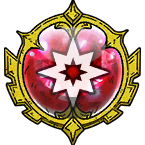

| Lv: | 150 |
|---|---|
| HP: | |
| MP: | |
| ATK: | |
| DEF: | |
| AGL: | |
| WIS: | |
| Move: | |
| Weight: | 65 |
| Weaknesses: | |
|
/ | |
|
|---|---|---|---|---|---|
| Resistances: | |
|
/ | |
|
| Immunities: | |
| Family: |  |
Role: |  |
Element: |  |
|---|
Note: All perks/abilities denoted with an * are using unofficial translations
| Abilities | ||||||
|---|---|---|---|---|---|---|
| Level | Type | Name | MP | Element | Range | Description |
| 1 |  |
Devilish Awakening* 魔人の覚醒 |
32 |  |
 Self |
Heals a major amount of the user's HP and raises physical, spell, and martial potency/recovery for 3 turns |
| 33 |  |
Cocytus* コキュートス |
153 |  |
 2-4 |
Deals major Crack-type spell damage proportional to ATK to all enemies in area of effect, ignores some Light Damage Res |
| 54 |  |
Blaze of Gorey* ゴア・ブレイズ |
112 |  |
 Front |
Deals major unreflectable Sizz-type physical damage (320% potency) to all enemies in area of effect, often stuns, occasionally raises damage taken for 3 turns |
| 82 |  |
Nightmarish Echoes* 悪夢のこだま |
147 | |
1-4 |
Deals major surehit martial damage proportional to ATK to 1 enemy 4 times, grants the user a barrier that reflects all attacks 1 time only in 99 turns (Times usable: 1) |
| Base Perks | ||
|---|---|---|
| Level | Name | Description |
| 1 | Max HP +30 | Raises max HP by 30 |
| 1 | ATK +15 | Raises max ATK by 15 |
| 1 | Demon Heart* デーモンハート |
Battle start: Reduces damage taken by 30% for 3 turns, grants a barrier that reflects all attacks 1 time only in 99 turns Greatly raises Demon Bloodlust for all Demon allies (incl. self) in the surrounding large rhombus for 3 turns Demon Bloodlust raises damage dealt by 10% each stage, and reflects 10% of damage taken back onto the opponent, with the reflected damage increasing by 5% each stage and ignoring some Light Damage Res (5 stages total) |
| 1 | Forbidden Rite* 禁忌の儀式 |
When any other ally is KO'd: For number of KO'd allies only, heals 1000 HP to the user and removes some status ailments, up to 3 times per battle When any other Demon ally is KO'd: For number of KO'd Demon allies only, triggers Forbidden Rite*, up to 3 times per battle This perk can be triggered by an attack on an ally (Forbidden Rite*: Raises Demon Bloodlust for all allies in large rhombus area of effect for 3 turns (self: 4 turns)) |
| 110, 120, 130, 140 | Physical Potency/Recovery +2% | Raises physical potency/recovery by 2% |
| 110, 120, 130, 140 | Spell Potency/Recovery +2% | Raises spell potency/recovery by 2% |
| 110, 120, 130, 140 | Martial Potency/Recovery +2% | Raises martial potency/recovery by 2% |
| 150 | Ability Potency/Recovery +2% | Raises ability potency/recovery by 2% |
| Awakening Perks | ||
|---|---|---|
| Awakening | Name | Description |
| 1 | King of All Demons* 悪魔の王 |
Action start on odd turns until turn 10: Heals 10% of max HP, raises ATK, DEF, and AGL for 3 turns, removes some status ailments |
| 2 | Zam Res +25 | Raises Zam resistance by 25 |
| 3 | Indomitable Spirit | Before HP hits 0: Preserves HP at 1, 1 time per battle This perk can be triggered by poison, special effect spaces, ally attacks, and reflected attacks, as well as counterattacks, follow-ups, and other attacks or effects triggered by perks |
| 3, 5 | Physical Potency/Recovery +5% | Raises physical potency/recovery by 5% |
| 3, 5 | Spell Potency/Recovery +5% | Raises spell potency/recovery by 5% |
| 3, 5 | Martial Potency/Recovery +5% | Raises martial potency/recovery by 5% |
| 4 | Frizz Res +25 | Raises Frizz resistance by 25 |
| 5 | Demonic Blessings* 悪魔のめぐみ |
Raises max HP by 100 If there are 3 or more Demon allies (incl. self) in the party: Raises max HP of all Demon allies (incl. self) by 50 |
| 1, 2, 3, 4, 5 | Stats Up | Raises HP, MP, ATK, DEF, WIS and AGL by 5% |